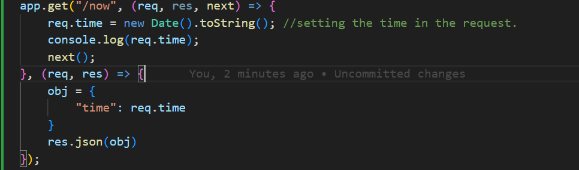

Middleware can be created for specific requests as well.
Like we can have for GET req. only or POST etc.
Syntax: app.METHOD(path, middlewareFunction)
Example:
app.get('/user', function(req, res, next) { req.user = getTheUserSync(); // Hypothetical synchronous operation next(); }, function(req, res) { res.send(req.user); });
function(req, res, next) => using this the node knows it is a middleware as it accepts 3 arguments.

PARAMS:
req.params:Creating route on GET to print the value that the user is sending.
we can do that by creating a route.
Also req.params.KEY can give us the value of the parameter sent as well.

QUERY PARAMTER:
Another kind of input that we can get from client.
Express can parse the query string automatically and store that in req.query now
We can also use format something like this if we are getting the different Requests on the same route.
app.route(path).request(handler).request(handler).....etc;
Example:

when the data is being sent as a post req. it comes encoded in form of & example: firstname=neeraj&lastname=nautiyal.
We can directly parse this using Express which will give this to us in JSON format
example:
{
"firstname":"neeraj",
"lastname":"nautiyal"
}
In order to do that we have to mark extended as false, NOTE that this only works if we are working on array, strings. For any other complex criteria we have to use extended=true.
Syntax:
It is added on top- app.use(bodyParser.urlencoded({encoded:false}));
Where bodyParser is the variable name to which we required body-parser.